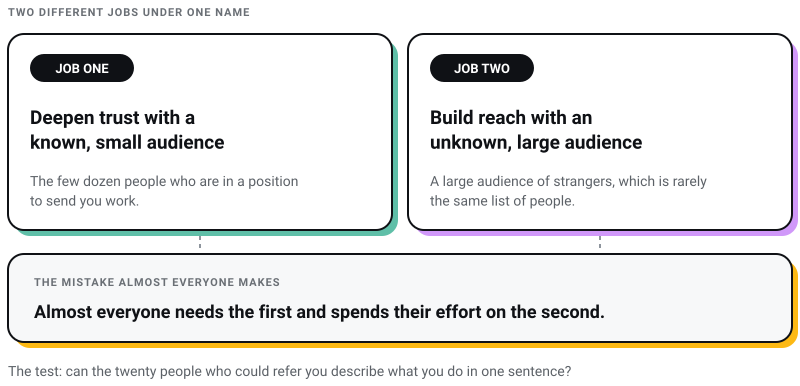
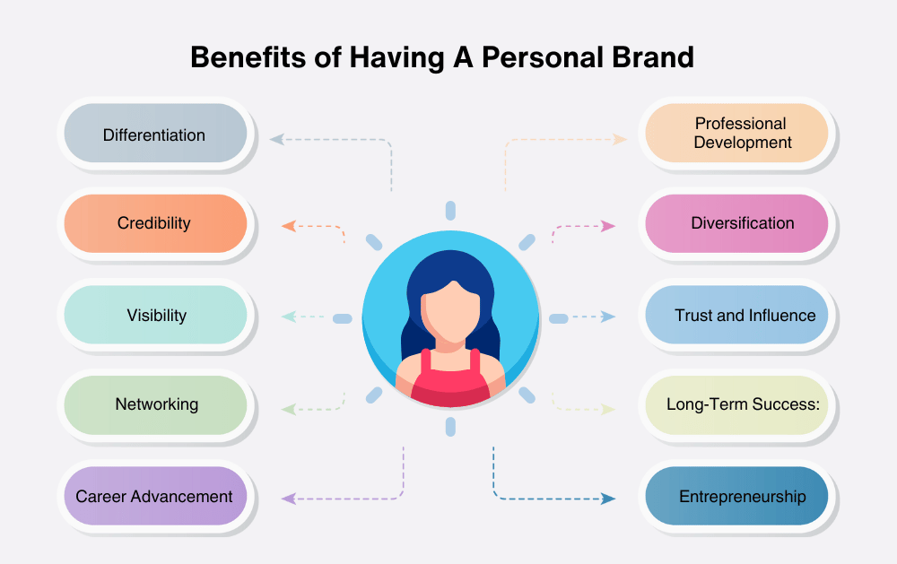
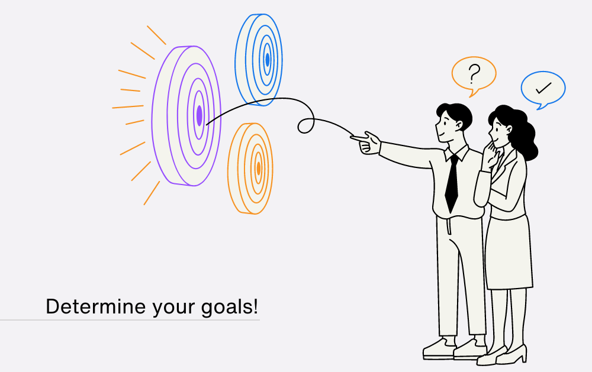
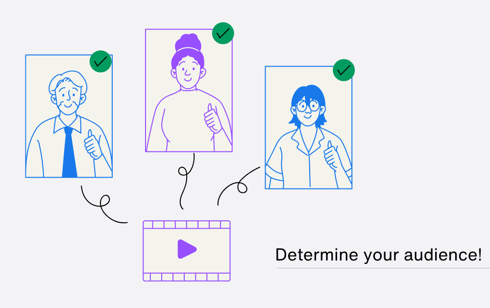
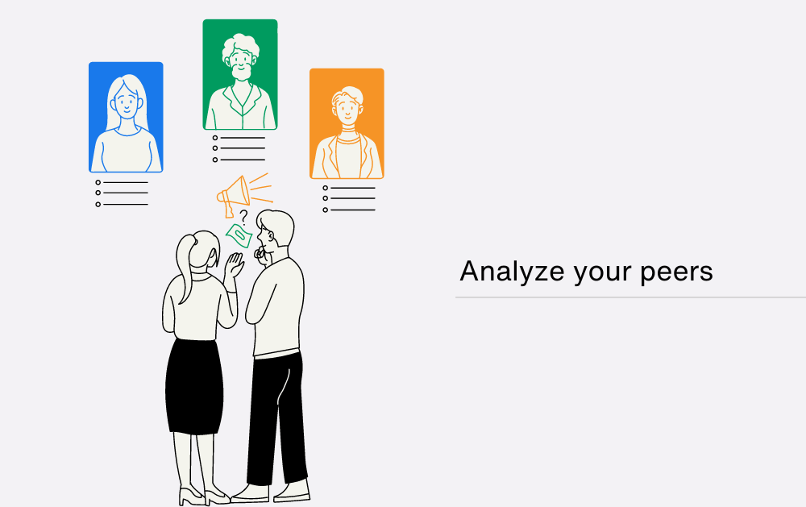
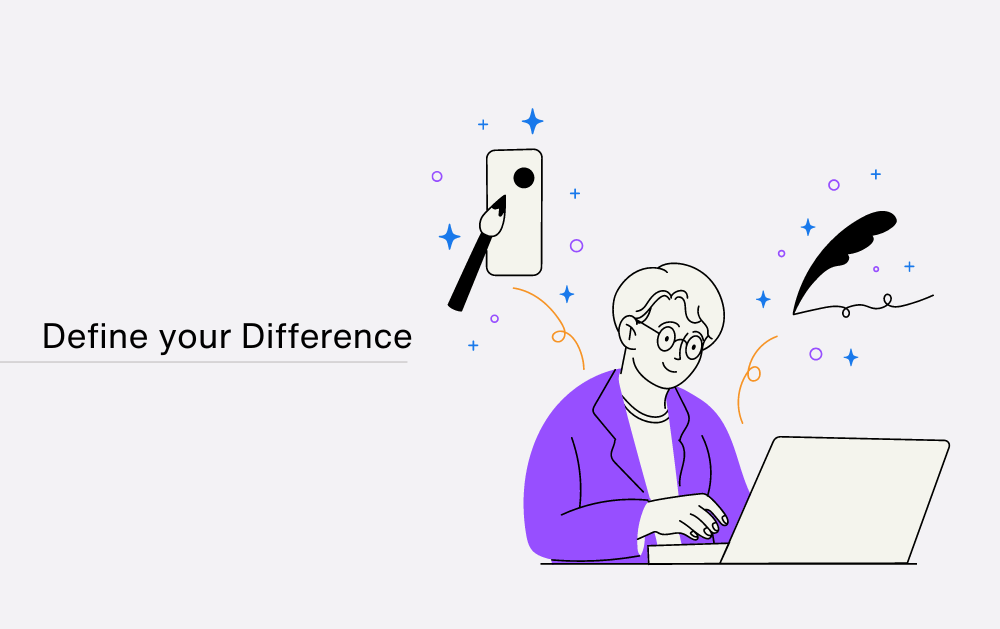
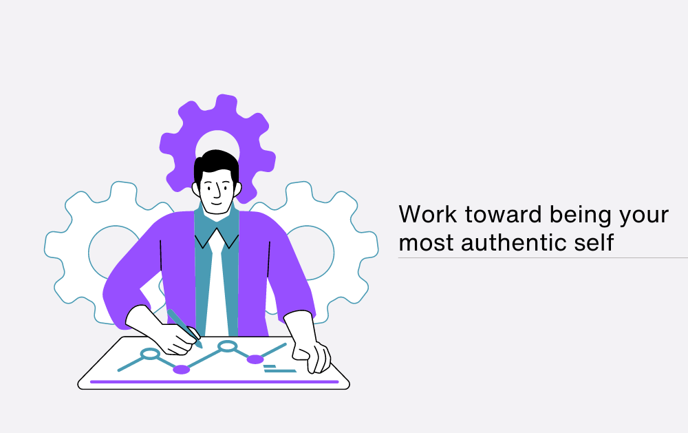
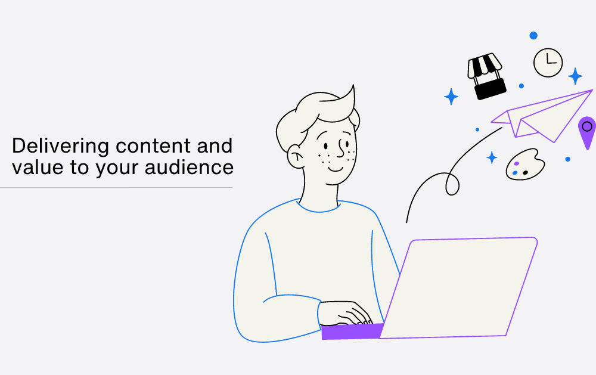
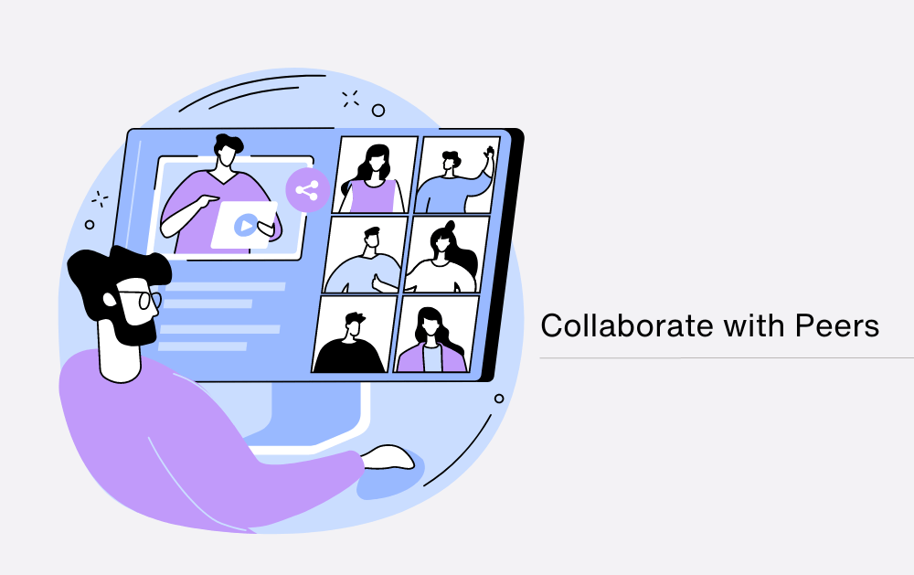
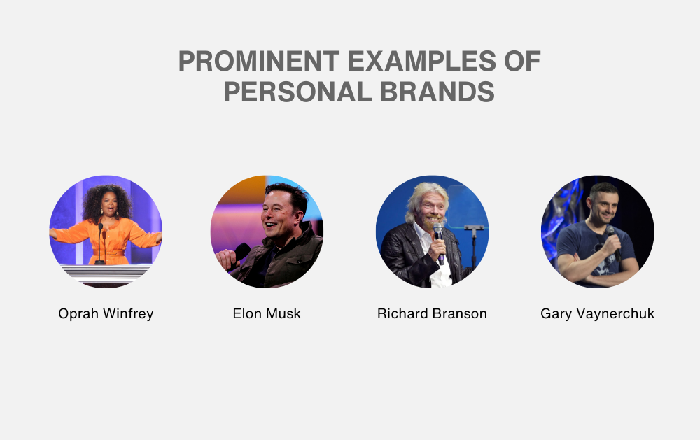

Branding
Branding
13 Top Must-Read Books for Web and Graphic Designers
From small-time gigs to booming creative industries, web and graphic designers have taken centre stage. Whether you’re a rookie or a design virtuoso…

Four years ago I made a cold call to ITC with a fancy deck and zero credibility. The deck was fine. The problem was that nobody on the other end had a reason to believe the person holding it, and no amount of design fixes that. Today we design for ITC, and for Coca-Cola and Marico. The lesson I keep coming back to from that call is that credibility compounds: the first mention is the hardest, and every one after it is easier, because there is finally something to check you against.
I run Pixel Street, a design and branding studio in Salt Lake, Kolkata, and I lost two companies before this one. So the argument I want to make is an unfashionable one. For most professionals, a personal brand is not an audience. It is a reputation held by a few dozen people who are in a position to send you work, and the tactics that grow the first are often the ones that quietly damage the second.
Your personal brand already exists. It is whatever the people who have worked with you say about you when you are not in the room, and it was built by your work and your behaviour long before you opened a content calendar. Personal branding is the deliberate management of that, not the manufacture of it.
Which means the useful question is not how to build a personal brand. It is which of the two jobs you are actually doing: deepening trust with a known, small audience, or building reach with an unknown, large one. Almost everyone needs the first and spends their effort on the second.

If you are working on the brand of a company rather than a person, the sequence is different and it is written up separately: the brand strategy guide covers the decisions, the branding process covers the order they happen in, and the case for and against a disruptive brand covers whether to break your category at all.
Everyone already does, which is the part that gets skipped. Among your colleagues, clients, former bosses and the people who sat next to you in your first job, you have a reputation. You did not opt into it. The only real choice is whether you take any interest in shaping it.
That reframing matters because it changes what counts as work. If a personal brand were something you built from nothing, then posting would be the work. Since it is a reputation you already have, the work is mostly evidence: doing things that are worth saying about you, and then making them findable by the people who might repeat them.
It also lowers the stakes usefully. You do not need to become known to a hundred thousand strangers. You need the twenty people who could refer you to be able to describe what you do in one sentence, without hedging.
Because people check. A 2017 CareerBuilder survey of 2,380 US hiring and HR managers, run by Harris Poll, found 70% of employers screening candidates on social media before hiring, up from 11% in 2006, and 51% researching current employees the same way. I am citing that with its date attached on purpose: CareerBuilder has not published a comparable edition since, so it is evidence that the behaviour became normal, not a reading of where the number sits today. Anyone quoting it as a current figure is quoting a nine-year-old survey without saying so.
The wider point survives the staleness. Before a serious conversation, someone will look you up, and whatever they find is doing the arguing on your behalf while you are not there.
There is a line about this that is attributed to Jeff Bezos everywhere, usually as "your brand is what people say about you when you are not in the room." I have not been able to find a primary source for it. Not an interview, not a shareholder letter, not a book. It circulates on quote sites and agency blogs, each citing the last. I still think it is the truest sentence about the subject, which is why it appears here without a name attached rather than with one I cannot stand up.

Four things genuinely change when your reputation is legible to the people around you, and one thing that gets promised does not.
Shorter proof cycles. The gap between meeting someone and being trusted enough to be paid is where most independent careers are won or lost. A legible reputation shortens it, because part of the case has already been made by someone else.
Better-qualified enquiries. A clear public position filters as much as it attracts. When people arrive already knowing what you do and roughly what you charge, you spend less of your life writing proposals for work you were never going to get.
Leverage in the room. Reputation is what lets you say no to a bad brief without losing the client. Nobody negotiates well from a position where every project is the one keeping the lights on, and the work shows it.
Collaboration instead of competition. This is the real structural difference from company branding. In my line of work the other studios are not the enemy, because overflow and referral travel between people who know what each other is good at. That only happens if your peers can describe what you do.
What it does not do is sell for you. A strong personal brand gets you a fair hearing. It does not survive a bad product, a missed deadline or a rude email, and it degrades faster than it accumulates.
You cannot create it, because it already exists in some form as a result of every working relationship you have had. What you can do is decide what you want it to say, then close the distance between that and what it currently says.
Here is the order I would work in.

Write down what you want the reputation to produce. Not adjectives. Outcomes: a specific kind of client, a job at a specific kind of company, speaking invitations, a book, hiring leverage. The reason to be this literal is that the tactics diverge almost immediately. Building toward inbound consulting work looks nothing like building toward a salaried role, and the person doing both at once usually achieves neither.
Then write down the honest version of where you are now. Ask three people who have worked with you to describe what you do, in their words, and do not defend yourself while they answer. The distance between their sentence and your intended sentence is the entire project. Everything below is closing it.

Name the people whose opinion of you would change your year. In most cases the list is short enough to write on one page, and it is rarely the same as the list of people who like your posts.
Do that exercise properly and it will contradict your instincts about channels. If the twelve people who matter are procurement heads at consumer goods companies in India, then a large following of designers is pleasant and irrelevant. If they are founders, it may be the opposite. The audience decides the channel; the channel does not decide the audience.

This is where personal branding genuinely differs from company branding. A brand strategy has to name an opponent, because positioning is comparative. A personal reputation does not work that way. The peers in your field are the primary route through which your name travels, and treating them as competitors cuts the wire it travels along.
So study them, but study them for gaps rather than for weaknesses. What does nobody in your city write about honestly? What question do clients keep asking that the whole industry answers with a brochure? That gap is where a small, specific reputation is available, and it is usually available because saying the true thing costs something.

Specificity is the whole game, and it is almost always achieved by subtraction. "Designer" is a category. "I run a studio in Kolkata that does brand and web work for large consumer companies, and I have lost two companies of my own" describes exactly one person. The second sentence is not more impressive than the first. It is more useful, because it can be repeated accurately by someone else.
Test yours by handing it to a friend and asking them to introduce you with it. If they have to add a clause to make it make sense, it is not finished. If they can say it in one breath and it excludes some work you would have taken, it is.

Authenticity has been flattened into a content style, which is a shame, because the operational meaning is simple and hard: say only things you would still say to the person's face, and publish opinions you are willing to be argued with about.
The practical benefit is consistency. A position you actually hold survives being asked about at a meeting eighteen months later. A position adopted because it performed well does not, and the failure is public and expensive. My own test before publishing anything is whether I would defend it to a client who disagrees. If the answer is no, the piece is not honest, it is marketing wearing honesty as a costume.

The most reliable form of value is specific and unscalable: answering the actual question someone asked, introducing two people who should know each other, telling a founder their brief is wrong before they pay you to execute it. None of that is content. All of it is what people repeat about you later.
Published work matters too, but the bar is that it should cost you something to publish. A post that reveals how you price, what you got wrong, or which fashionable tactic you have stopped believing in is worth twenty that summarise what everyone already agrees on.

Reputation travels through people, not through platforms. The mechanism is someone saying your name in a room you are not in, and that only happens if they can remember what you are for and have some reason to want you to do well.
Collaboration is the cheapest way to earn both. Working alongside someone for a month tells them more about you than three years of following you would, and it puts you in front of their network with an implicit endorsement attached. If you are thinking about this at scale, the mechanics of borrowed audience are covered in how local influencers can grow a brand beyond their own city.
Some things worth keeping in view while you do the work above.
In personal branding you are the medium, and your temperament decides which tactics are available to you. If you are energised by people, run on conversation: events, calls, podcasts, the phone. If you are not, write. Introverts are routinely told to network their way into a reputation and then fail at it slowly for years, when a body of written work would have done the same job better and been searchable afterwards.
Know your weaknesses precisely enough to design around them rather than apologise for them. Mine is that I would rather argue with a client about their positioning than post about it, which is a real cost, and writing things down like this is the workaround rather than the preference.
Consistency is worth more than volume, and it means consistency of position, not of posting schedule. Somebody who publishes four times a year and says the same defensible thing each time is more legible than somebody who publishes weekly and drifts with whatever is being discussed.
Match the format to how you actually think. If writing is slow for you, talk: record it, transcribe it, edit the transcript. The medium is negotiable. The requirement that you have a point of view is not.
There is a version of this that is a performance, and it is worse than saying nothing. The useful version is specific: a decision you got wrong, what it cost, and what you do differently now. I lost two companies before Pixel Street and I say so in most things I write, including this one, because the alternative is presenting a career as a straight line that nobody would recognise.
The distinction is whether the story has a fact in it. Confessional writing with no verifiable detail reads as technique, because it is.
Pick where your named audience already is and ignore the rest, including the platform everyone is currently excited about. For most professional services in India that means LinkedIn, plus wherever your specific industry actually talks. X has a far smaller professional audience than its share of discourse suggests. Instagram works if your output is visual and does very little if it is not.
One platform done properly beats four done thinly, and a page you own beats all of them for anything you want to survive an algorithm change. The argument against building your main asset on ground someone else controls applies to a reputation exactly as it applies to a company website.
Before publishing, be able to answer what this is for and who it is for. Not commercially, necessarily, but honestly. Sharing to stay visible produces the volume of noise that makes people scroll past your name, which is the opposite of the goal.

Every article on this subject names the same four people. I have kept them, because they are instructive, but not in the way these lists usually intend. Each one is a poor template for a normal professional career, and understanding why is more useful than admiring them.
The clearest case of a personal brand built on a body of work rather than on commentary about work. Twenty-five years of a daily show is the asset; everything downstream of it, including the media company and the book club's ability to move a title, is interest earned on that. The lesson usually drawn is about authenticity. The lesson actually available is that she made an enormous quantity of the thing itself first.
The most-followed account on X, and the reason to study him is that his reputation is now inseparable from his companies in both directions. The upside and the damage both transfer. That is the real trade in fusing a person to a business, and most people recommending it have never carried the downside. Ignore the follower counts these write-ups quote, including for him; they are stale within months and were never the thing worth studying.
Virgin is the interesting case because the reputation became a licensable asset. The group mixes businesses it owns with names it licenses to other operators, which is why published counts of "how many Virgin companies there are" vary so wildly and why I have not repeated one. What Branson demonstrates is that a personal brand can be strong enough to rent out. That is rare, and it is a different thing from being well known.
Chairman of VaynerX and chief executive of VaynerMedia, both operating. He is the most copied and least copyable of the four. The volume strategy works when the volume is the product, and he has built an agency group underneath it that converts attention into revenue. Without that machine, the same posting schedule produces exhaustion and a following that cannot be sold anything.
You will meet a figure of 43% for employers using social media to check on current employees, usually alongside the 70% above. It appears nowhere in the CareerBuilder research it is attributed to. That release puts research into current employees at 51%.
The other is that 84% of Millennials trust neither advertisements nor the brands that create them, which is a misreading of the source it travels with. The McCarthy Group's 2014 survey question was whether respondents were the kind of person who likes advertising. Liking is not trusting, the question said nothing about brands, and the published page discloses no sample size. The argument it usually props up, that people trust people rather than logos, stands perfectly well without it.
You have one either way. Whether to invest in it depends on how much of your future work arrives through people who already know you. For most consultants, freelancers, agency owners and senior specialists, that is nearly all of it.
Longer than a campaign and shorter than people fear. The first effect is usually qualitative: enquiries arrive already knowing what you do, so conversations start further along. Anyone promising a measurable pipeline in thirty days is describing advertising.
It is a real one, and it is the honest argument against everything above. A business whose enquiries all arrive through one person's name is harder to sell than one whose enquiries arrive through a company's. If an exit is the plan, build the studio's reputation deliberately alongside your own.
Write one page explaining what you actually believe about your field, including the part your industry would dispute, and put it somewhere you own. It does more than a year of sharing other people's articles.
Personal branding has been oversold as a route to becoming famous and undersold as what it actually is: taking responsibility for a reputation you already have. The work is unglamorous. Do good work, be specific about what you do, say things you are willing to defend, and make it easy for the people who already rate you to explain you to somebody else.
None of that looks like a personal branding strategy while it is happening. It looks like work, and like being the same person in public that you are in a meeting. The compounding comes later, and only if there was something underneath it worth compounding.
If you would rather argue about your positioning with someone than fill in a template, that is the work we do at Pixel Street in Kolkata.
11 min read 8 cited sources Branding
Author
Khurshid Alam is the founder of Pixel Street, an AI-native design & development studio. Design thinking on weekdays and spreadsheets on weekends.
He writes about growth, design, and AI, mostly because someone has to say the quiet parts out loud.
Branding
From small-time gigs to booming creative industries, web and graphic designers have taken centre stage. Whether you’re a rookie or a design virtuoso…
 Branding
Branding
Hey there! Have you ever watched a commercial that made you smile, feel inspired, or even brought you to tears?
 Branding
Branding
Hey there! Have you ever wondered how some ads just make you want to buy something right away? Or how a website convinces you to click a button and…